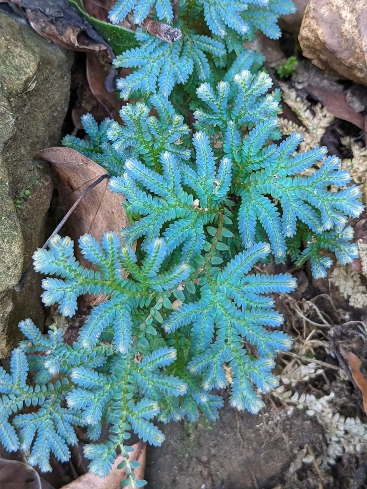

蕨类与裸子植物 · 植物界
翠云草 Selaginella uncinata

卷柏科卷柏属多年生草本，主茎匍匐、分枝羽状，叶片在光照下泛蓝绿色金属光泽，如翠云铺地，是优良的地被植物。
- 分类
- 门蕨类植物门纲石松纲目卷柏目科卷柏科属卷柏属
- 栖息环境
- 海拔 1000 米以下的林下阴湿处与溪谷石缝，喜湿润半阴
- 地理分布
- 中国广东、广西、福建、浙江、江西、湖南、贵州、云南、四川等地
- 保护级别
- 暂无评估；未被列入国家重点保护野生植物名录
物种志
翠云草为卷柏科卷柏属多年生草本，主茎匍匐、长达一米，分枝羽状，节上生不定根。叶片小型，二型，交互排列成四行，侧叶较大、卵形，中叶较小，表面蓝绿色，在散射光下泛金属光泽。孢子囊穗四棱形，生于小枝顶端，孢子叶球状，孢子期夏秋季。
翠云草分布于中国广东、广西、福建、浙江、江西、湖南、贵州、云南、四川等地，多生于海拔一千米以下的林下阴湿处和溪谷石缝。它喜温暖湿润和半阴环境，忌强光直射和干旱，适宜疏松肥沃、排水良好的酸性土壤。叶色蓝绿、铺地如云，是南方园林中优良的林下地被和盆景铺面材料；全草在民间入药，有清热利湿之效。栽培中需保持较高空气湿度。
形态与习性
- 株高匍匐草本，茎长可达 1 m
- 叶色蓝绿色，有金属光泽
- 孢子期夏秋季，囊穗四棱形
- 光照喜散射光，忌强光直射
- 水分喜高湿，忌干旱
- 土壤疏松肥沃的酸性土
- 主要用途林下地被、盆景铺面
趣味知识
- 翠云草的叶片在散射光下泛出蓝绿色金属光泽，像铺了一层翠云。
- 它靠匍匐茎节上的不定根蔓延，一株可铺满大片林下地面。
- 翠云草与卷柏同属，但卷柏耐旱卷曲，翠云草则喜湿怕干。